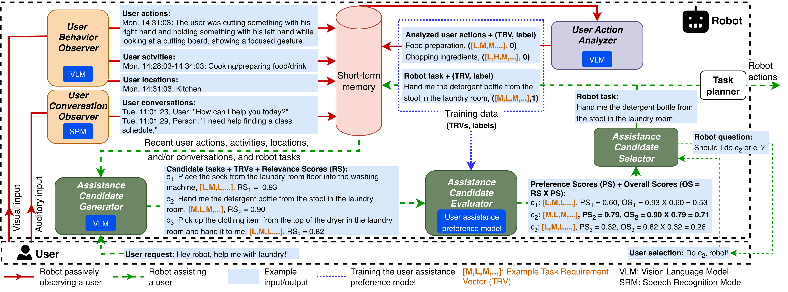

Service robots may encounter ambiguous user requests that require context-aware inference. Users may also have unique preferences with certain tasks when requesting robotic assistance. We introduce PARAssist (Personalized and Adaptive Robotic Assistance), a unique architecture for disambiguating requests in a personalized manner for service robots. PARAssist utilizes vision-language models to determine the physical and cognitive demands of a user's tasks, and passively learns user preferences for assistance by contrasting the demands of tasks a user performs independently with those they request from the robot. When an ambiguous request is received, task candidates are generated from the history of the user's actions, activities, locations, conversations, and requests, as well as the current user and environment state. Task candidates are then evaluated against the learned user preference model, to suggest suitable assistance options. Experiments conducted with PARAssist show that personalization can align disambiguation with the task demands of a user's prior assistance requests. An ablation study confirms the contributions of PARAssist's main components in personalizing disambiguation.
A robot passively observes a user via visual and auditory inputs and analyzes user actions (red lines). To assist based on a user request, the robot uses the stored user data and generates and evaluates multiple candidate tasks to assist (green dashed lines).
